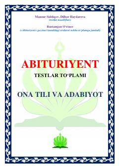

AOOna tili va adabiyot fanlaridan abituriyentlar uchun mo'ljallangan testlar to'plami.
Ushbu to'plam abituriyentlar uchun ona tili va adabiyot fanlaridan test savollari va tahliliy mashqlarni o'z ichiga oladi. Kitobda tilshunoslik qoidalari, adabiy asarlar tahlili va fonetik hodisalarga oid murakkab testlar jamlangan.